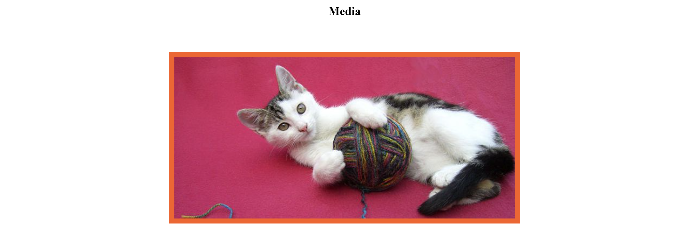

The Domestic Cat
Click here for more information about
the lions
About Domestic cats
They are often called house cats when kept as indoor pets or simply cats when there is no need to distinguish them from other felids and felines. They are often valued by humans for companionship.
There are more than
seventy cat breeds
recognized by various cat registries..
Cats senses
- They can hear sounds too faint or too high in frequency for human ears.
- They can see in near darkness.
- They have poorer color vision and a better sense of smell than humans
Media
